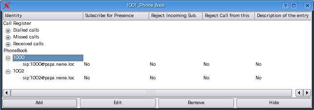

back to the ToC
KPhoneIS User
Manual: Phonebook
- KPhoneIS User
Manual: Phonebook
- Introduction
- Add Button:
- Edit Button:
- Where is it stored
Introduction

The Phonebook allows to store and maintain
SIP-URIs.
The Phone-Book has the
fields
To add URIs to the Buddy-List
(i.e. request for presence subscription),
the flag "Subscribe for Presence Information" in the add/edit widget
must be set.
Add Button:
- Enter a name of
choice into the “Person” field.
- Enter a valid SIP
URI (example: sip:1234@linux-papa.nene.loc)
into the identity field
- Allow a subscription for presence information of this identity
- Reject attempts of an incoming subscription (only for
"end-to-end" subscriptions) from this identity
- Rejcetion of all calls from this identity
Save the values by pressing the OK button.
Edit Button:
- the Identity
- the description
- a subscription for presence information
- rejection of an incoming subscription (only for "end-to-end"
subscriptions)
- rejcetion of all calls from this identity
may be changed here.
Where is it stored
The Phonebook is stored in XML-files, one per user entry. The path name
is freely selecable and must be specified in the settings. The default
name is composed that way:
$HOME/.kpsi_<user
tab>_phonebook.xml, where <user tab>
is
substituede by the word default or by the value of
your -u cmdline
switch
back to the ToC